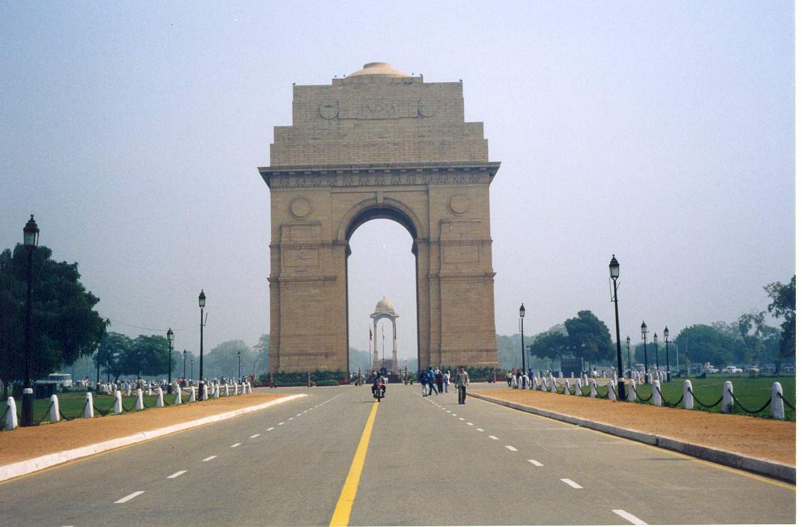

At the centre of New Delhi stands the 42 m high India Gate, an "Arc-de-Triomphe" like archway in the middle of a crossroad. Almost similar to its French counterpart, it commemorates the 70,000 Indian soldiers who lost their lives fighting for the British Army during the World War I. The memorial bears the names of more than 13,516 British and Indian soldiers killed in the Northwestern Frontier in the Afghan war of 1919. The foundation stone of India Gate was laid by His Royal Highness, the Duke of Connaught in 1921 and it was designed by Edwin Lutyens. The monument was dedicated to the nation 10 years later by the then Viceroy, Lord Irwin. Another memorial, Amar Jawan Jyoti was added much later, after India got its independence. The eternal flame burns day and night under the arch to remind the nation of soldiers who laid down their lives in the Indo-Pakistan War of December 1971. The entire arch stands on a low base of red Bharatpur stone and rises in stages to a huge moulding. The cornice is inscribed with the Imperial suns while both sides of the arch have INDIA, flanked by the dates MCMXIV (1914 left) and MCMXIX (1919 right). The shallow domed bowl at the top was intended to be filled with burning oil on anniversaries but this is rarely done. During nightfall, India Gate is dramatically floodlit while the fountains nearby make a lovely display with coloured lights. India Gate stands at one end of Rajpath, and the area surrounding it is generally referred to as 'India Gate'. Surrounding the imposing structure is a large expanse of lush green lawns, which is a popular picnic spot. One can see hoards of people moving about the brightly lit area and on the lawns on summer evenings.